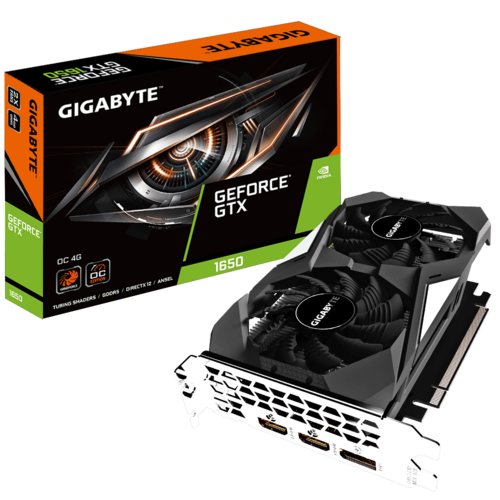
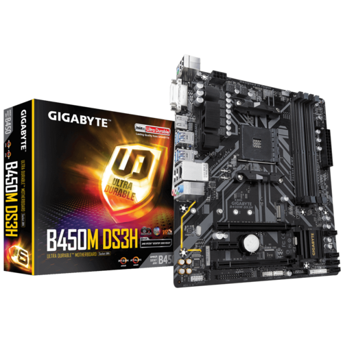
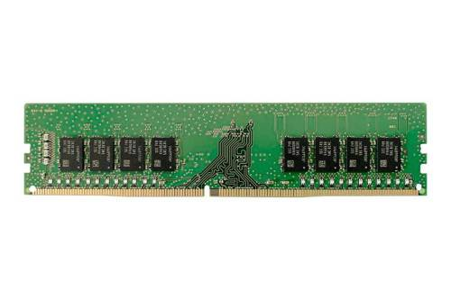
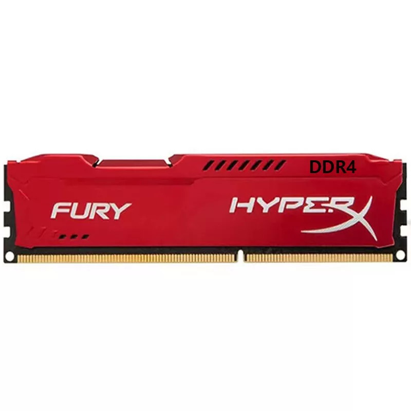
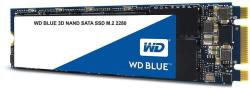
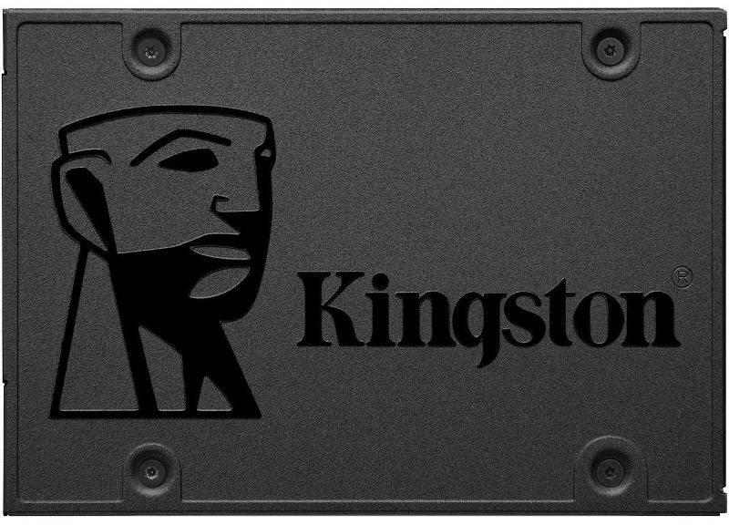

Számítógép alkatrészek bemutatása
Ez az oldal a saját otthoni számítógépem 2024-es állapotát írja le. A régebbi állapotáról ezen az oldalon írtam.
Processzor: AMD Ryzen 9 5900X

- Kiadási dátum: 2020
- 12 mag és 24 szál
- 64MB L3 Cache
- AM4 foglalat
- Nincs beépített grafikus lehetőség
Sok olyan játékkal játékkal játszom amihez erős processzor kell így ez volt az első fejlesztés a 4 év alatt.
Videókártya: Nvidia GTX 1650

- Kiadási dátum: 2019
- Memória típusa: GDDR5
- Memória méret: 4GB
- Csatlakozó: PCI-E 3.0 x16
- DirectX 12
Alaplap: Gigabyte B450M DS3H

- Kiadási dátum: 2018
- Processzor Foglalat: AM4
- DDR4, 4DB DIMM
- Van lehetőség processzor grafikájának használatára
- M.2 Csatlakozó SSD-hez
Memória:


- Kapacitás: 16GB
- Típus: DDR4
- Kapacitás: 8GB
- Típus: DDR4
Kicsit instabillá teszi a rendszert de ingyen volt a plusz 8 Giga és végülis működik ¯\_(ツ)_/¯.
Tárhely:

- Kiadási dátum: 2017
- Méret: 500GB
- M.2 csatlakozó

- Kiadási dátum: 2018
- Méret: 1000GB
- Sata áram és Sata data csatlakozó